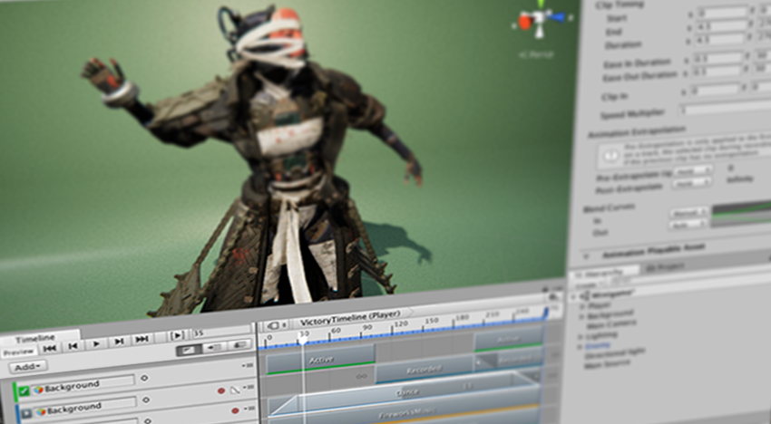

About Timeline¶

Unity’s Timeline
Use Unity’s Timeline to create cinematic content, game-play sequences, audio sequences, and complex particle effects.
Each cut-scene, cinematic, or game-play sequence that you create with Unity’s Timeline consists of a Timeline Asset and a Timeline instance. The Timeline window creates and modifies Timeline Assets and Timeline instances simultaneously.
The Timeline Overview section includes details on the relationship between the Timeline window, Timeline Assets, and Timeline instances.
The Using Timeline section shows how to create Timeline Assets and Timeline instances, record basic animation, animate humanoids, and use other Timeline features.
The Samples section includes a description of the samples offered by the Timeline package.
Installing Timeline¶
Timeline is a Package and is installed through the Packages window in Unity. Consult the Packages window documentation for more information.
Technical details¶
Requirements¶
This version of Timeline is compatible with the following versions of the Unity Editor:
2019.1 and later (recommended)
Package contents¶
The following table indicates the folder structure of the Timeline package:
Location |
Description |
|---|---|
|
Root folder containing the source for the Timeline Runtime. This is the source for what is available in the Player. |
|
Root folder containing the source for the Timeline Editor used to edit Timeline files inside the Unity Editor. |
Document revision history¶
Date |
Reason |
|---|---|
October 23, 2020 |
Added documentation for customization samples. |
October 22, 2020 |
Added samples section |
October 10, 2018 |
Document created. Matches package version 0.0.0 |